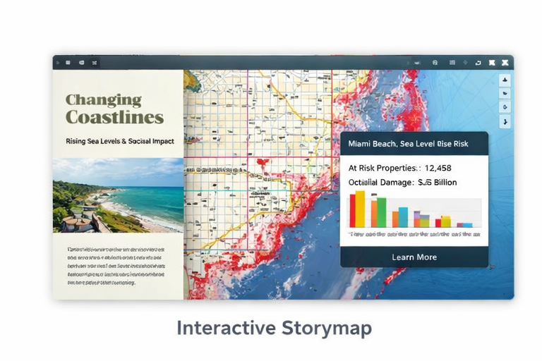

Selected Map & Design Projects
Interactive Storymap
Created an interactive storymap combining spatial analysis and narrative elements to communicate complex datasets visually.
View ProjectGeoBIM Schedule Polygons
Developed geospatial schedule polygons for AEC workflows, optimized vector data for web mapping performance.
View Project DetailsCustomizing GeoBIM Maps
Created customized GeoBIM web maps and scenes, improving usability and visual clarity for project stakeholders.
View ProjectMidwest Floods & Socially Vulnerable Populations
Analyzed and mapped social vulnerability in the Midwest during flood events, highlighting at-risk communities.
View Blog PostCreative & Interactive Work — Aura by Paula
Led visual design, interactive storytelling, and layout for a lifestyle brand.
View ProjectSkills & Expertise
- Map design & cartography: vector & raster styling, thematic mapping, visual hierarchy, spatial QA
- Interactive and web mapping, vector tiles, Mapbox GL–based workflows
- Geospatial data processing with Python, SQL, and GDAL
- Design & prototyping: Figma, Adobe Creative Suite, Canva
- Cross-functional collaboration and product-focused design
Education
M.S. Geospatial Technology for Geodesign — Thomas Jefferson University
B.S. Environmental Engineering, Minor in Finance — Drexel University